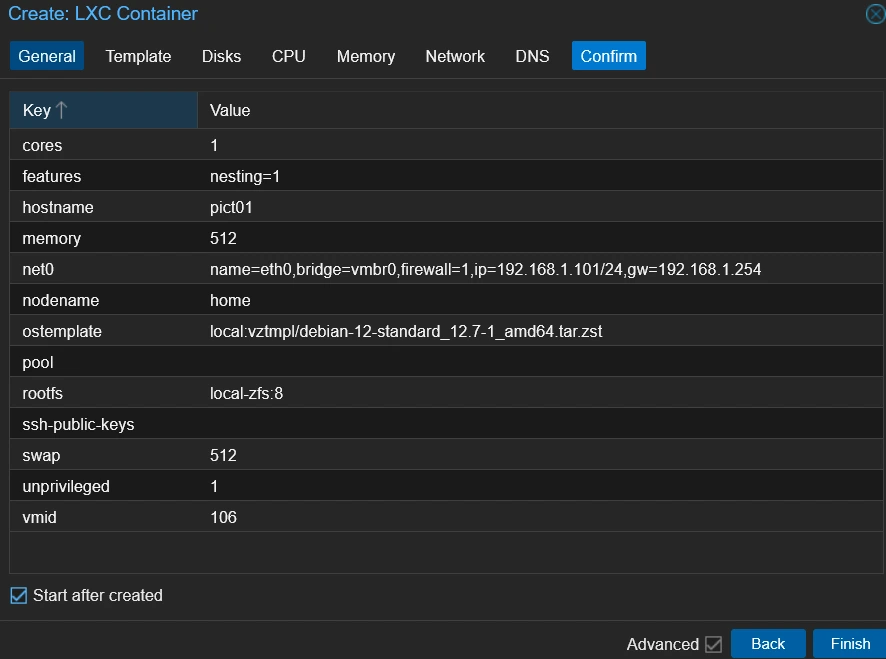
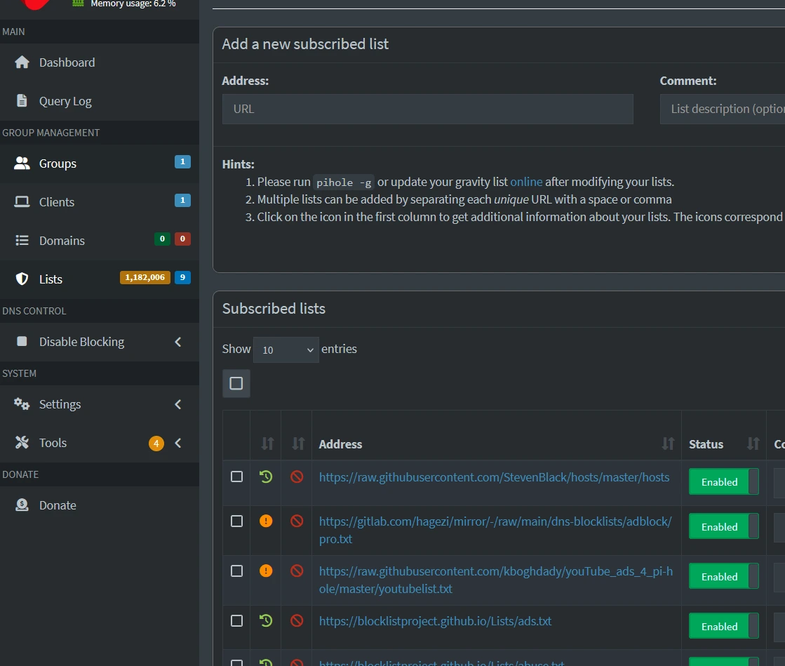
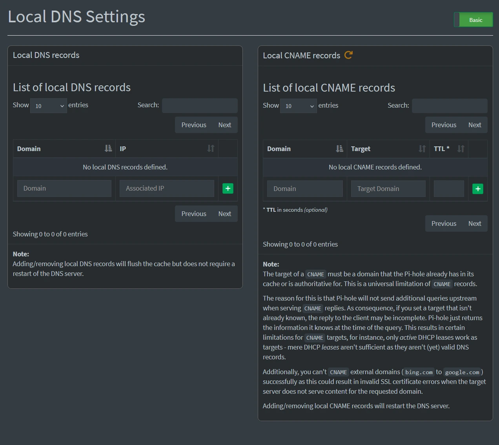

Whilst I like the idea of using docker for hosting a bunch of applications in containers, I thought it might be a better idea to get more hands on with the process rather than type out some yaml files and leave whatever application is there to run on its own without very much input from me. Sometimes it's best to get an idea of how the internals work a bit better and then go back to the easier way of doing things. I would also recommend looking up jails in FreeBSD if anyone is interested although they are only tangientially relevant here.
Pi-Hole is a DNS server application that first came to prominence as a way of blocking ads cheaply by using a Raspberry Pi to route DNS requests. I have used it before and think that it is a great piece of software, not just for blocking ads and stopping trackers but for the more nerdy benefit of being able to use it to make hostnames searchable on my LAN when things aren't going right. Sometimes the reason for you having something like this is merely an unintended benefit to those who designed and created it. Nonetheless, its a really powerful application that isn't heavy on resources to run. Nowadays, it runs on all sorts of operating systems so I'm going to install it on Debian 12 as an LXC (Linux Container) in Proxmox.
I'm going to assume that you have already installed Proxmox and got it set up before you've come here but if not, then I recommend heading to their website for more information. Their documentation is good and clear on when you need to do to get through all the first steps of booting the install media and configuring the system through the setup procedure and beyond. Since you already have everything installed and working for you, you are going to want to make sure that you have the most up-to-date LXC templates to play with. To get hold of them, click on the relevant Proxmox node and then select Shell in the bar menu underneath. In the console that opens up, type the following and press Enter.
pveam update
A moment later you should see "update successful". If you don't, definitely copy whatever error you see and head to the Proxmox community for help.
Now, head up to the top-right or right click on the name of the node you are working with and click "Create CT". From here the steps are simple to create the LXC, put in a hostname and come up with a secure root password for the container, then pick the Debian template on the next screen (for me this was Debian 12.7.1). Next give the amount of boot disk space, I went with 8GB which is overkill to be honest, 2GB is fine, 4GB is great. Next, give one CPU core and then between 256 and 512MB of memory with the standard 512MB for swap. Here's the important part, you will need to give the LXC a static IP address and set the gateway address. I went with "192.168.1.101/24" because it was free on my LAN and easy to remember and my gateway is "192.168.1.254". You can leave the IPv6 address blank if you like, I did. You can keep the DNS settings as they are and make sure to click "Start after created" and click Finish.
Head over to the new container by clicking the hostname and then click "Console" in the bar menu. Login with the credentials you decided earlier with the username "root". Firstly, you'll want to make sure that the new instance is up-to-date before proceeding, so typing the following command will update the repositories then download and install any required updates.
apt update -y && apt upgrade -y
Call me old fashioned, but I like to reboot my system after updating it, just to make 100% sure that everything is working properly. Once everything is back up and running, we need to install curl as it is not included in the binaries originally installed with the OS. We tend to use curl to download content via the command line but it is powerful tool that can handle download and upload to servers as well as sending mail over SMTP. On this occasion, we will be using curl to dowload Pi-Hole and and pipe the commands into Bash for installation.
apt install curl
curl -sSL https://install.pi-hole.net | bash
Go through this installation wizard and pick the options you would like. The defaults are all good enough for what most users will need but I like to tweak the odd thing here and there, like using a custom DNS provider (although I picked Cloudflare on this occasion). I also make sure that the log queries are turned on for making sure that everything is working as it is supposed to and can diagnose problems when it's not. Once the setup is finished, I would immediately change the password with the following command:
pihole setpassword
Now you can finally play around with Pi-Hole for the first time! You'll need to head to the web GUI from whichever web browser you are using by going to the IP address that you set earlier in the process with the following format http://[your-ip]:80/admin. In my example, it would be http://192.168.1.101:80/admin that I would head to. Log in with the password that you just set on the command line and take a look.
The first thing you will probably want to do is set up some ad blacklists. To do this, head to "Lists" in the bar on the left side of the page. Here you can add URLs to blocklists at the top and they can either be used to blacklist (block) or whitelist (allow) traffic to whichever devices use this Pi-Hole as a DNS server. To get you started, here is a well-known and well thought of group of blocklists.
If you have the time, I would also recommend talking a little look at the "Local DNS Records" option in the "Settings" tab. There you can set not only the mentioned DNS records but CNAME records for devices that are in the Pi-Hole's cache or it is authoritative for. Like I said earlier, I have found this useful in the past to quickly connect to things without having to remember their IPv4 addresses.
